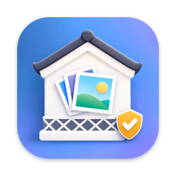

KuraPhoto
A Mac app that neatly organizes photos and videos from your iPhone, SD cards, external disks, Android phones, and the Photos app into folders by date taken. It never deletes your originals, and it even checks that nothing was missed.
What it does
- Import from iPhone or iPad: just connect a cable. Live Photos and edit data come along, and anything already imported is skipped automatically.
- Import from external storage: SD, microSD, and CF cards, USB drives, external disks, digital cameras, and Android phones.
- Organize Mac folders: copy to another location, or rearrange within the folder (can be undone).
- Import from Photos Library: extracts originals from the Photos app into regular folders. Your library is never changed.
- Duplicate Check: finds identical photos and copies that differ only in size or format, and cleans them up (can be undone).
- Missing Files Check: checks month by month that everything is in your destination and creates a report (PDF, CSV).
Free and Pro
| Feature | Free | Pro |
|---|---|---|
| Loading, browsing, trial run (dry run) | ✓ | ✓ |
| Importing and organizing | Up to 100 per day | Unlimited |
| Finding duplicates | ✓ | ✓ |
| Merging and deleting duplicates | — | ✓ |
| Missing Files Check (viewing results) | ✓ | ✓ |
| Saving reports (PDF, CSV) and Import Remaining | — | ✓ |
| Undo and Continue Import | ✓ | ✓ |
Pro is a one-time purchase (no subscription) and supports Family Sharing. See the App Store for pricing.
System requirements
- macOS 14 Sonoma or later (Apple silicon and Intel)
- Available in English, German, French, Japanese, Korean, and Chinese (Simplified and Traditional), following your Mac’s language
- Importing from iPhone or iPad: a USB cable (unlock the iPhone and choose “Trust This Computer”)
- Importing from Android: set the USB mode to “Transfer photos (PTP)”
Frequently asked questions
Will my original photos be deleted or changed?
No. Importing and organizing always copy, and photos on the source are never deleted. If you use “Organize Within This Folder” to move files, “Undo” returns them to their previous layout. Anything cleaned up with Duplicate Check can also be undone. KuraPhoto has no permanent-delete feature.
What can I do with the free version?
Loading, browsing, trial runs, finding duplicates, checking for missing files, undo, and continuing imports are unlimited. Importing and organizing are limited to 100 items per day in total (it resets at midnight). Repeat the same action the next day to continue (already imported items are skipped automatically and don’t count).
Can I import from Android phones or digital cameras?
Yes. For Android, connect by USB and choose “Transfer photos (PTP)” under “USB settings” in the notification. For a digital camera, read the SD card with a card reader, or connect by USB and set the camera to “PC connection”, “PTP”, or a similar mode. See the user guide for details.
My iPhone doesn’t appear when I connect it
Unlock the iPhone and choose “Trust” when “Trust This Computer?” appears. Trying a different cable or hub may help. See the user guide for details.
Some photos on my iPhone can’t be imported
When iCloud Photos and “Optimize iPhone Storage” are on, photos whose originals are only in iCloud can’t be imported over a cable (this is how Apple’s system works). On a Mac with iCloud Photos turned on for the same Apple Account, you can import them with “Import from Photos Library”.
The import stopped or the cable came loose
Reconnect and “Continue Import” appears. It skips what’s already imported and picks up where it left off.
How do I restore my purchase?
Choose “KuraPhoto › Restore Purchases” from the menu bar (you must be signed in with the same Apple Account you used to buy).
I’d like a refund
Purchases on the App Store are sold and processed by Apple, so refunds are handled by Apple. Please request one at reportaproblem.apple.com.
Contact
Please send bug reports and requests to kuraphoto@kurawise.com. We usually reply within 2–3 business days (excluding weekends and Japanese holidays). You can write to us in English.
Including your macOS version, the source (such as your iPhone model), and the logs in the “KuraPhoto Logs” folder in your destination folder helps us investigate faster. Information you send is used only to reply and investigate the issue (privacy policy).
Version history
- 1.0 (2026) — First release
License
Use of KuraPhoto is governed by Apple’s Standard End User License Agreement (EULA).
© 2026 Kurawise